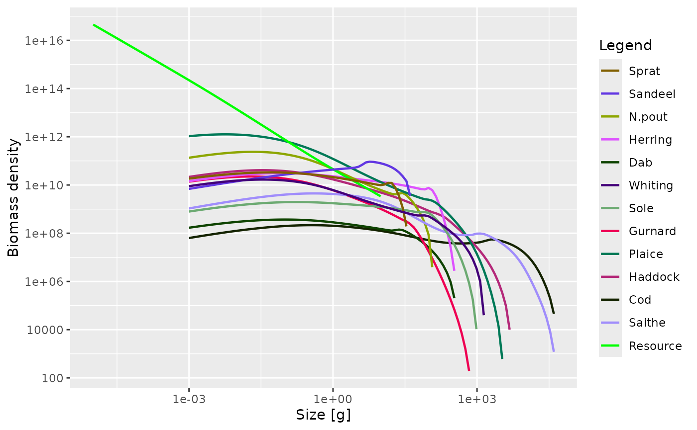
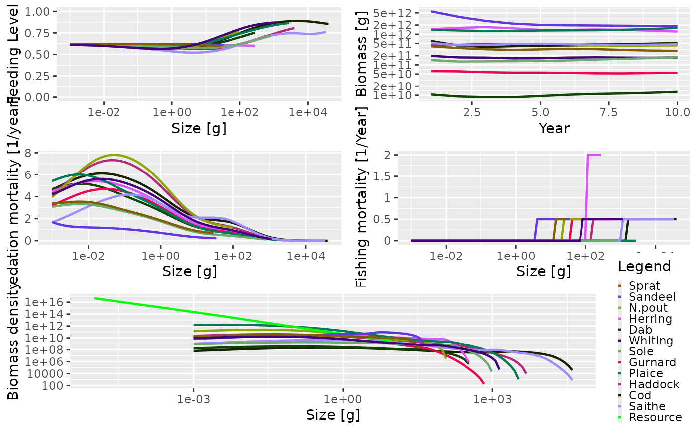

Exploring the Simulation Results
Source:vignettes/exploring_the_simulation_results.Rmd
exploring_the_simulation_results.RmdIntroduction
In the sections on the multispecies
model and on running a
simulation we saw how to set up a model and project it forward
through time under our desired fishing scenario. The result of running a
projection is an object of class MizerSim. What do we then
do? How can we explore the results of the simulation? In this section we
introduce a range of summaries, plots and indicators that can be easily
produced using functions included in mizer.
We will use the following MizerSim object for these
examples, where the effort array is the one we created in the previous section on running a
simulation:
sim <- project(NS_params, effort = effort_array, dt = 0.1, t_save = 1)Accessing the simulation results
The projected species abundances at size through time can be obtained
with N(sim). This returns a three-dimensional array (time x
species x size). Consequently, this array can get very big so inspecting
it can be difficult. In the example we have just run, the time dimension
of n has 10 rows (one for the initial population and then
one for each of the saved time steps). There are also 12 species each
with 100 sizes. We can check this by running the dim()
function and looking at the dimensions of the n array:
## [1] 10 12 100To pull out the abundances of a particular species through time at size you can subset the array. For example to look at Cod through time you can use:
N(sim)[, "Cod", ]This returns a two-dimensional array: time x size, containing the cod
abundances. The time dimension depends on the value of the argument
t_save when project() was run. You can see
that even though we specified dt to be 0.1 when we called
project(), the t_save = 1 argument has meant
that the output is only saved every year.
Often we are particularly interested in the results at the final time-step. These we can access with
finalN(sim)which is a two dimensional array (species x size).
The projected resource abundances can be accesses similarly with
NResource(sim)This returns a two-dimensional array (time x size). And if we are only interested in the final time step
finalNResource(sim)returns a vector with one entry for each size class.
Summary functions
As well as the summary() methods that are available for
both MizerParams and MizerSim objects, there
are other useful summary functions to pull information out of a
MizerSim object. A description of the different summary
functions available is given in the summary functions help
page.
All of these functions have help files to explain how they are used.
(It is also possible to use most of these functions with a
MizerParams object if you also supply the population
abundance as an argument. This can be useful for exploring how changes
in parameter value or abundance can affect summary statistics and
indicators. We won’t explore this here but you can see their help files
for more details.)
The functions getBiomass() and getN() have
additional arguments that allow the user to set the size range over
which to calculate the summary statistic. This is done by passing in a
combination of the arguments min_l, min_w,
max_l and max_w for the minimum and maximum
length or weight. If min_l is specified there is no need to
specify min_w and so on. However, if a length is specified
(minimum or maximum) then it is necessary for the species parameter
data.frame (see the
species parameters section) to include the parameters a
and b for length-weight conversion. It is possible to mix
length and weight constraints, e.g. by supplying a minimum weight and a
maximum length. The default values are the minimum and maximum weights
of the spectrum, i.e. the full range of the size spectrum is used.
Examples of using the summary functions
Here we show a simple demonstration of using a summary function using
the sim object we created earlier. Here, we use
getSSB() to calculate the SSB of each species through time
(note the use of the head() function to only display the
first few rows).
## [1] 10 12
head(ssb)## sp
## time Sprat Sandeel N.pout Herring Dab
## 1 210810187886 5.378411e+12 183159668755 442644004208 6885675636
## 2 157421300798 3.498137e+12 153386837865 499200353502 5278650740
## 3 138701220818 2.510551e+12 135619248024 603931625682 5065030019
## 4 118875574040 1.997337e+12 110306292341 569167018628 4877123531
## 5 114060666493 1.790051e+12 112246876589 420615452917 5224602753
## 6 125640651552 1.736155e+12 124869964868 351468531499 6147959412
## sp
## time Whiting Sole Gurnard Plaice Haddock Cod
## 1 113572753243 63630241776 9102232924 303365911438 151965178029 531536722956
## 2 87964359889 46775076902 7385280731 232689238362 117830523964 345850203280
## 3 91749455062 45443905458 7528148453 240988454909 135946957263 290183064993
## 4 85038348880 49465062866 6855105119 264670808435 158905104522 308445205952
## 5 77139941423 53555703121 5600934574 279557468426 145778058562 335438386336
## 6 82462061701 56441766035 5398238488 278206590917 123593721267 351386199474
## sp
## time Saithe
## 1 327578246185
## 2 218500695506
## 3 197610219846
## 4 228220656964
## 5 271860341040
## 6 287805766571As mentioned above, we can specify the size range for the
getsummaryBiomass() and getN() functions. For
example, here we calculate the total biomass of each species but only
include individuals that are larger than 10 g and smaller than 1000
g.
biomass <- getBiomass(sim, min_w = 10, max_w = 1000)
head(biomass)## sp
## time Sprat Sandeel N.pout Herring Dab
## 1 244119195586 4.589606e+12 238847649463 1.273446e+12 8373096367
## 2 189464604834 2.888858e+12 214678099536 1.413601e+12 6837801607
## 3 169593586308 1.931520e+12 185655249238 1.536104e+12 6536986610
## 4 146468867085 1.409300e+12 166879189209 1.360238e+12 6286073743
## 5 144115814704 1.171670e+12 178630603519 1.175016e+12 6849215327
## 6 159924185834 1.102235e+12 192414189537 1.177930e+12 7904848054
## sp
## time Whiting Sole Gurnard Plaice Haddock
## 1 161515844306 127400523235 24759887586 766087469917 333172493301
## 2 140923805330 112319321368 24087806247 722705573485 335440217763
## 3 139784785126 114244854064 23828541236 743105121821 372682335506
## 4 127051769924 115827036011 20324716177 711903001258 356182595515
## 5 126548669345 116366841999 19072116393 661973266258 323469227911
## 6 137220141191 121684387886 21334281004 668659838352 325245994096
## sp
## time Cod Saithe
## 1 45159646196 158969500338
## 2 52110333051 183496280557
## 3 62885974091 216448253249
## 4 59073484678 214031942473
## 5 51993520691 174593364166
## 6 49544506290 138713867303Functions for calculating indicators
Functions are available to calculate a range of indicators from a
MizerSim object after a projection. A description of the
different indicator functions available is given in the indicator functions
help page.. You can read the help pages for each of the functions
for full instructions on how to use them, along with examples.
With all of the functions in the table it is possible to specify the
size range of the community to be used in the calculation (e.g. to
exclude very small or very large individuals) so that the calculated
metrics can be compared to empirical data. This is used in the same way
that we saw with the function getBiomass() in the section
on summary functions for MizerSim objects.. It is also possible to
specify which species to include in the calculation. See the help files
for more details.
Examples of calculating indicators
For these examples we use the sim object we created
earlier.
The slope of the community can be calculated using the
getCommunitySlope() function. Initially we include all
species and all sizes in the calculation (only the first five rows are
shown):
slope <- getCommunitySlope(sim)
head(slope)## slope intercept r2
## 1 -0.7822250 25.40779 0.8722251
## 2 -0.7970084 25.24922 0.8666363
## 3 -0.8066332 25.21573 0.8665750
## 4 -0.8151679 25.23791 0.8678893
## 5 -0.8229285 25.24489 0.8686275
## 6 -0.8272602 25.23104 0.8673588This gives the slope, intercept and \(R^2\) value through time (see the help file
for getCommunitySlope for more details).
We can include only the species we want with the species
argument. Below we only include demersal species. We also restrict the
size range of the community that is used in the calculation to between
10 g and 5 kg. The species argument is a character vector
of the names of the species that we want to include in the
calculation.
dem_species <- c("Dab", "Whiting", "Sole", "Gurnard", "Plaice", "Haddock",
"Cod", "Saithe")
slope <- getCommunitySlope(sim, min_w = 10, max_w = 5000,
species = dem_species)
head(slope)## slope intercept r2
## 1 -1.096584 26.88942 0.9749307
## 2 -1.177678 27.21999 0.9796408
## 3 -1.148456 27.13231 0.9754412
## 4 -1.060903 26.70050 0.9748899
## 5 -1.026889 26.50463 0.9820432
## 6 -1.061542 26.68677 0.9807863Plotting the results
R is very powerful when it comes to exploring data through plots. Two
useful packages for plotting are ggplot2 and
plotly. These use data.frames for input data whereas many
of the mizer functions return arrays or matrices. Fortunately it is
straightforward to turn arrays and matrices into data.frames using the
melt() function from the reshape2 package that
mizer makes available to you. Although mizer does include
some dedicated plots, it is definitely worth your time getting to grips
with these other plotting packages. This will make it possible for you
to make your own plots. We provide some details in the section on using ggplot2 and plotly with mizer.
Included in mizer are several dedicated plots that use
MizerSim objects as inputs (see the plots help page.).
As well as displaying the plots, these functions all return objects of
type ggplot from the ggplot2 package, meaning
that they can be further modified by the user (e.g. by changing the
plotting theme). See the help page of the individual plot functions for
more details. The generic plot() method has also been
overloaded for MizerSim objects. This produces several
plots in the same window to provide a snapshot of the results of the
simulation.
Some of the plots plot values by size (for example
plotFeedingLevel() and plotSpectra()). For
these plots, the default is to use the data at the final time step of
the projection. With these plotting functions, it is also possible to
specify a different time, or a time range to average the values over
before plotting.
Plotting examples
Using the plotting functions is straightforward. For example, to plot
the total biomass of each species against time you use the
plotBiomass() function:
plotBiomass(sim)
As mentioned above, some of the plot functions plot values against size at a point in time (or averaged over a time period). For these plots it is possible to specify the time step to plot, or the time period to average the values over. The default is to use the final time step. Here we plot the abundance spectra (biomass), averaged over time = 5 to 10:
plotSpectra(sim, time_range = 5:10)
As mentioned above, and as we have seen several times in this guide,
the generic plot() method has also been overloaded. This
produces 5 plots in the same window (plotFeedingLevel(),
plotBiomass(), plotPredMort(),
plotFMort() and plotSpectra()). It is possible
to pass in the same arguments that these individual plots use,
e.g. arguments to change the time period over which the data is
averaged.
plot(sim)
The next section describes how to use what we have learned to model the North Sea.